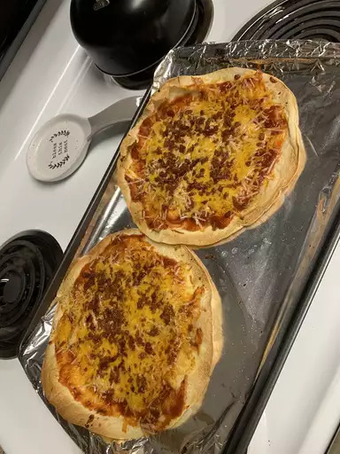

Easy Tortilla Pizza

Description
This recipe is not your usual chicken Parmesan! Instead, chicken tenders are coated in a mixture of freshly grated Parmesan cheese and Italian-seasoned panko crumbs, fried to a golden brown, and finished in a lovely cream sauce. A side of pasta would be good with this, or try mashed potatoes. A green vegetable and a salad will complete this dinner menu, nicely!
Ingredients
- Preheat the oven to 400 degrees F (200 degrees C).
- Place tortilla on a baking sheet. Brush with olive oil; sprinkle garlic powder, salt, and pepper on top.
- Bake in the preheated oven until golden, 3 to 5 minutes. Remove from the oven and spread tomato sauce on top; arrange chicken breast, green bell pepper, and green onions over tomato sauce. Sprinkle with mozzarella cheese.
- Bake in the preheated oven until cheese is melted, about 5 minutes. Sprinkle oregano over cheese. Slice pizza into wedges using a pizza cutter.
Steps
- Pat chicken tenders dry with paper towels and season lightly with salt and pepper.
- Place flour on a shallow plate. Place beaten eggs into a shallow bowl. Combine grated Parmesan cheese, Italian-seasoned panko crumbs, and 1 teaspoon smoked paprika, and place on a second shallow plate.
- Cover a dinner plate or platter with parchment paper.